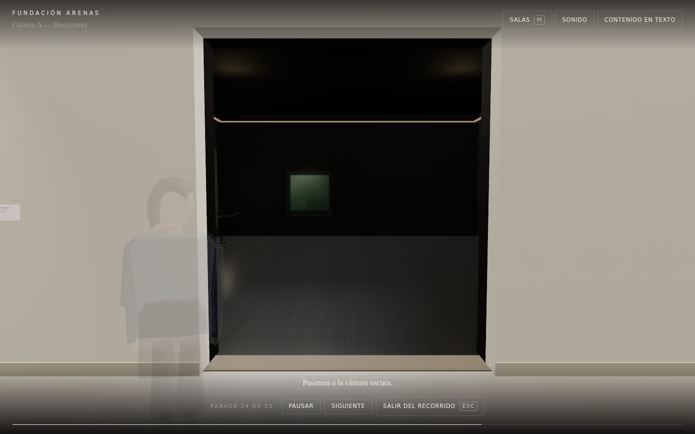
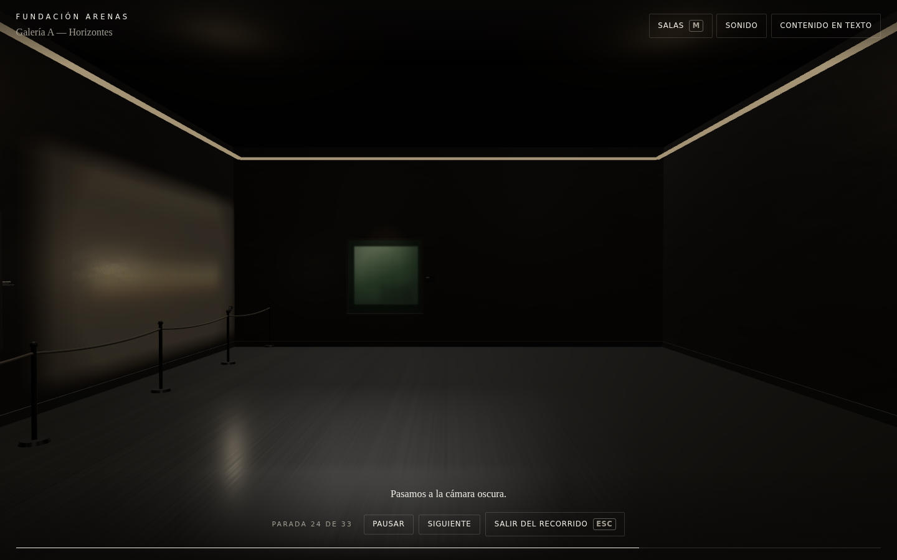
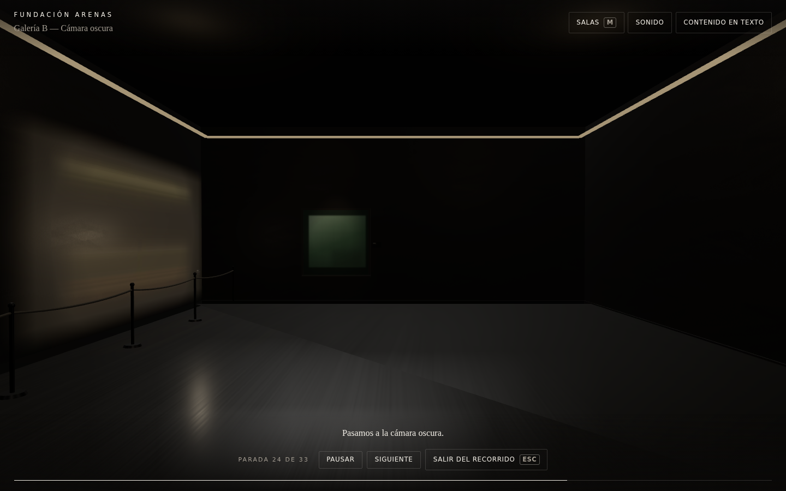
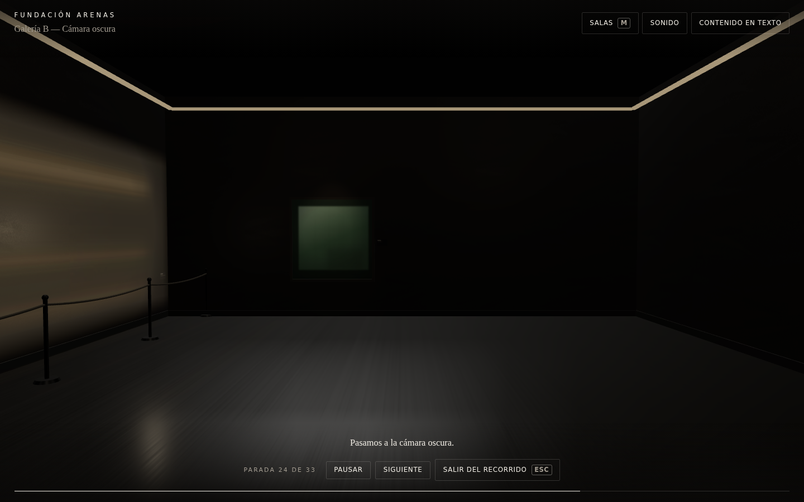
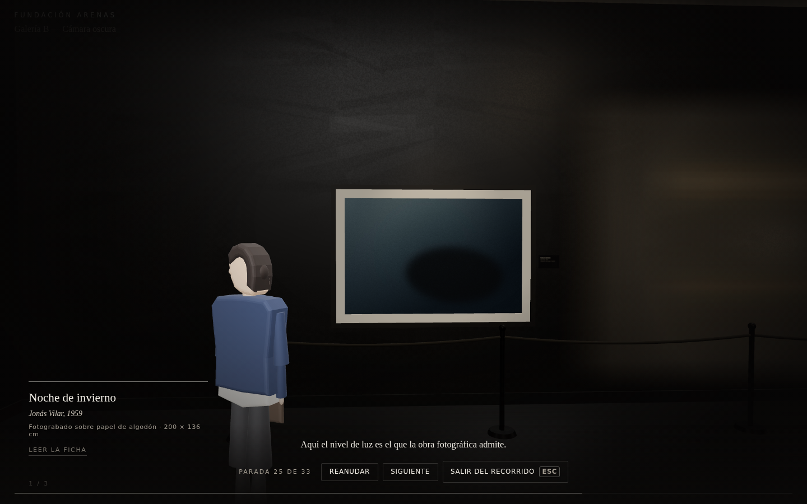

Crossing — Galería A → Galería B
RUN_ID crossing-2026-08-13T06-35-33-292Z · 2026-08-13T06:36:13.481Z · portal.gallery-a-gallery-b
The room-to-room transition, replacing the cut. Every frame below was captured by stepping the runtime by hand with the render loop stopped, so each image is a named frame of one crossing rather than whatever the browser was showing.
The eight moments







Where the room changes
Exposure against the camera's position along the crossing axis. Galería A is lit at 0.95 and the dark chamber at 1.05; the line shows the change resolving across the opening rather than on one frame. The marked point is where the active Space actually changes — inside the doorway, which is both the truthful moment and the invisible one.
Verdicts
| check | measured | |
|---|---|---|
| ✓ | one camera authority for the whole crossing | TRANSITION |
| ✓ | no camera authority violations | 0 |
| ✓ | the crossing is a move, not a cut | 280 frames |
| ✓ | handoff happens inside the doorway | 0.022 m from the wall plane |
| ✓ | handoff happens mid-flight, not before | frame 192 of 281 |
| ✓ | destination built and visible before the camera moves | READY, visible=true, prefetch took 0 ms |
| ✓ | camera stays inside the aperture | 0 of 36 wall frames outside |
| ✓ | lands on the authored arrival pose | Δ 0.0e+0 m / 0.0e+0 m |
| ✓ | the look never whips | max 0.00 °/frame |
| ✓ | atmosphere resolves gradually | largest single-frame exposure step 0.00130 |
| ✓ | atmosphere lands on the destination room | exposure 1.05 |
| ✓ | authority returns to the Director | DIRECTED |
| ✓ | the crossing lands on the portal beat, not past it | step.08-paso-galeria-b |
| ✓ | the tour continues in Galería B | step.09-lleva-noche in space.gallery-b |
| ✓ | the next beat starts from where the crossing landed | join Δ 0 |
| ✓ | the beat waited for the crossing instead of cutting it off | 281 frames on the portal beat |
| ✓ | a repeated crossing lands where its own room says it should | gallery-a · gallery-b |
| ✓ | a repeated crossing is not faster than the first | 5000ms/0.8ms worst · 5000ms/0.6ms worst |
| ✓ | no console errors | none |
First crossing against a repeated one
The destination is built, warmed and already visible through the opening before the camera commits to it, so the first crossing is not a cold path. These are the same mechanism run again, warm, for comparison.
| portal | warm wait | travel | frames | median frame | worst frame |
|---|---|---|---|---|---|
| gallery-b-gallery-a | 130 ms | 5000 ms | 301 | 0 ms | 0.8 ms |
| gallery-a-gallery-b | 101 ms | 5000 ms | 301 | 0 ms | 0.6 ms |
Aperture and endpoint
| opening | 2.6 × 3 m, EAST wall of space.gallery-a |
| gate point | [8.00, 1.62, -10.00] |
| outward axis | [1, 0, 0] |
| arrival pose | [9.700, 1.620, -10.000] → [13.700, 1.500, -10.000] |
| landed at | [9.700, 1.620, -10.000] → [13.700, 1.500, -10.000] |
| frames outside the aperture | 0 |
| camera authority violations | 0 |